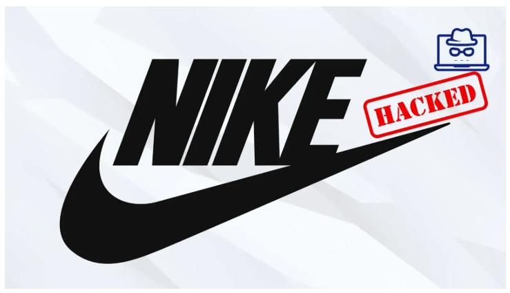

Nike Allegedly Hacked by WorldLeaks Ransomware Group
 Athletic footwear and apparel manufacturer Nike has become the latest victim of WorldLeaks, a financially motivated ransomware group known for data extortion attacks.The group announced the breach on its darknet leak site on January 22, claiming responsibility for the incident and threatening to release stolen data on January 25, 2026, at 6 PM GMT.
WorldLeaks listed Nike as a victim on its leak platform with minimal accompanying details. However, the post reportedly received over 400 views within hours of publication.
According to a post on forums, the attack was discovered on January 22, 2026, with data exfiltration occurring on the same date.